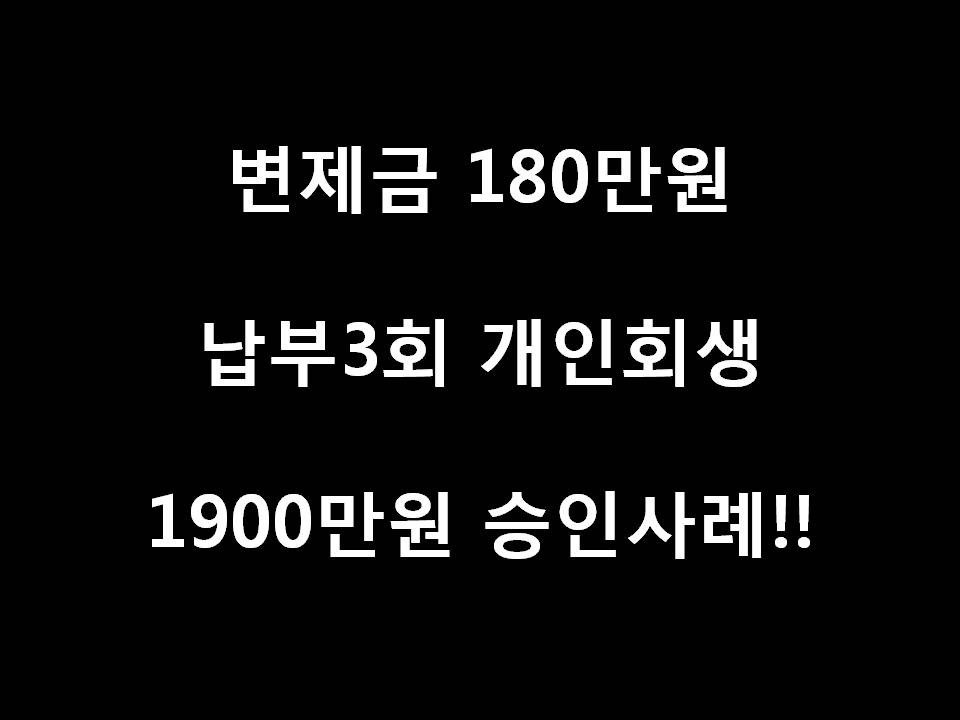
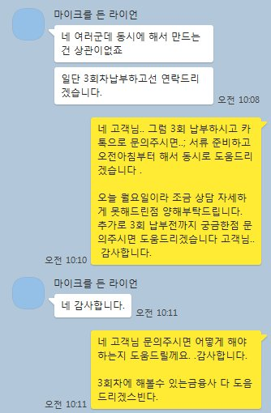
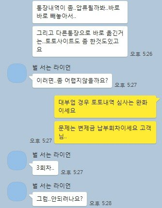
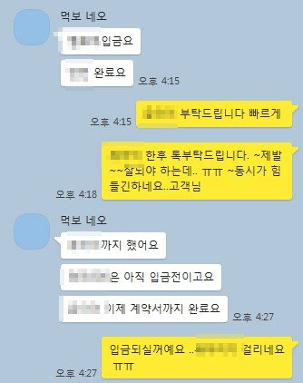
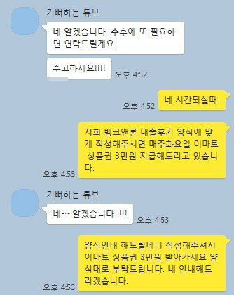

변제금 180만원 납부3회차 개인회생 직장인 동시대출 1900만원 승인사례!

안녕하세요 ^^ 뱅크앤론 김한수 상담사입니다. 이번주는 날씨가 좋아서 다들 주말은 잘보내셨나요 ?? 최근 다시 코로나19 확진가가 증가되어서 걱정이네요 ㅠㅠ 저희 뱅크앤론도 최대한 방역수칙을 지키면서 고객님들 상담통해 도움드리고 있습니다. 빨리 다들 이 위기가 지나갔으면 하네요...~
오늘 소개해드릴 고객님은 납부회차가 적지만.. 최대자금 2000만원 필요한 고객님 사례를 소개해드리겠습니다.
고객님께서는 2회차에 간단하게 문의주셨습니다. 3회차 진행할때 심사할려고 미리 문의를 주셨는데요...
조건은 납부3회 변제금 180만원 급여는 약 400~500만원 4대보험 가입 직장인이었습니다. 다른 중개업과 상담했지만 저희 뱅크앤론 동시대출 가능한지 상담 통해서 제가 진행해드렸습니다.
회생자 동시대출 경우 금융사마다 심사 속도에 맞춰야 해서 많은 어려움이 있지만... 고객님의 빠른 피드백을 통해서 여러군데 빠르게 진행도움드렸습니다. 그결과 ....
몇군데 부결됐지만.... A금융사 500 A연계사 500 B금융사 300 C금융사 600 이렇게 총 1900만원 도움드렸습니다. 받는순서도 A B C 순서에 맞게 해서 다행이 잘 진행됐습니다.
아래는 저와 고객님의 카톡대화내용입니다. 개인회생 대출에 궁금하신점 있으시면 뱅크앤론 통해 상담신청 남겨주시면 상담사 통해서 도움드리겠습니다.



